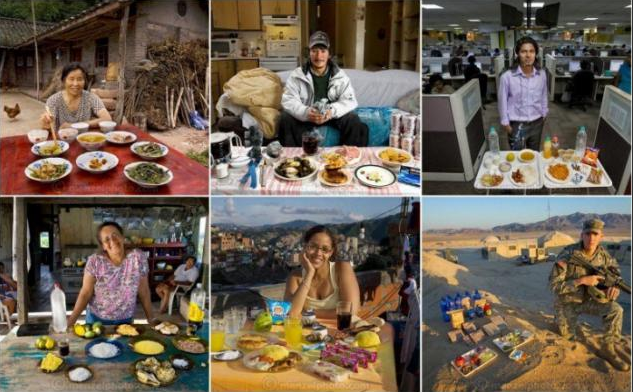

Food traditions
Culture and food traditions play a central role in society and in human behaviour. Each culture adopts its own traditions, the way people eat or the food people eat is different in every place. For example in Ethiopia, people always use their right hand when they eat Ethiopian food, they eat with their hands, utensils are not necessary. The situation is different in China, people eat with chopsticks.
In other places, people eat really strange food, for example, people in Cambodia eat fried spiders. People in United States, in the Ohio River Valley, eat hamburguers made from pig brains.
The food festivals in Europe can be fun, like the world-famous tomato throwing festival in Spain – La Tomatina – or the Battle of Oranges festival in Italy. In Mexico there’s a very special food festival; if you love radishes then you’ll be happy to celebrate “Noche de Rabanos” in Oaxaca!
Did you know about these food traditions?

Now observe the image. What do you see?
In your notebook write a short description about the image. Consider these questions to write your description:
- What is the story behind each person?
- Do these people have something in common?
- Do you think they are celebrating something special?
- What are they eating?